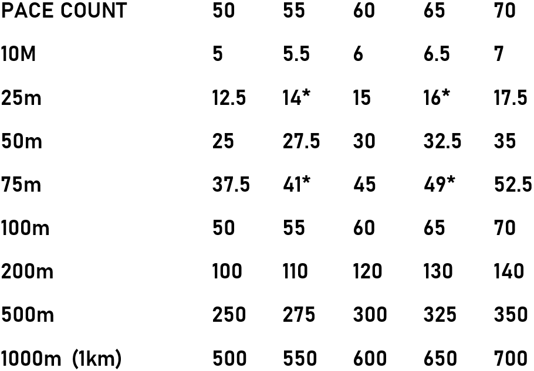

Each person has a different size ‘pace’ when they walk.
To assist in navigation, we measure how many paces (double steps or every left or right foot
count) an individual takes to walk 100m.
We can then easily convert this pace count to distances.
It
is easiest if you round to the nearest pace count for calculations.
Ascending, descending, terrain types
and underfoot conditions can affect your pace count.
Below is a guide for a range of pace counts:
